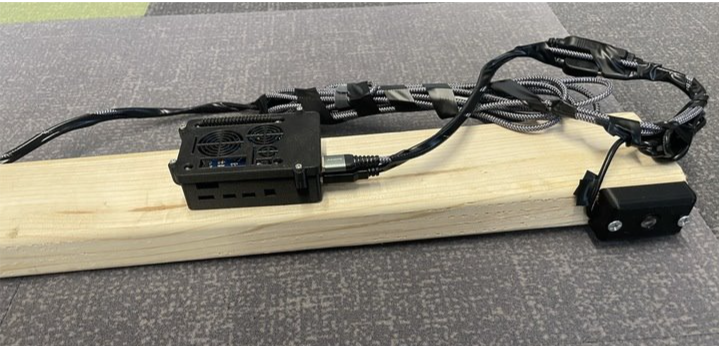
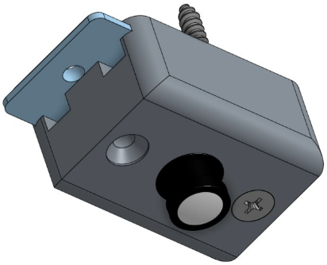
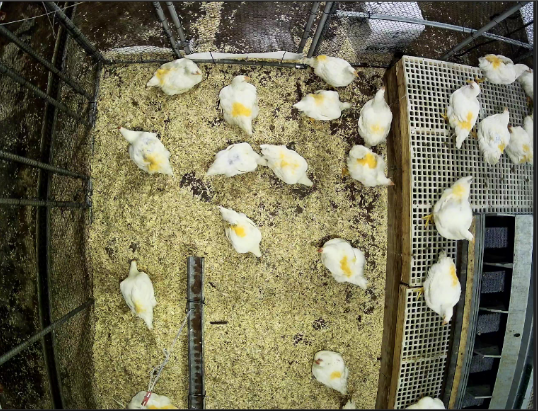
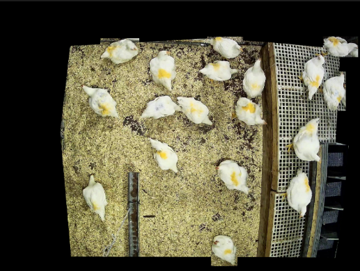
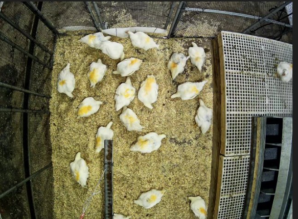
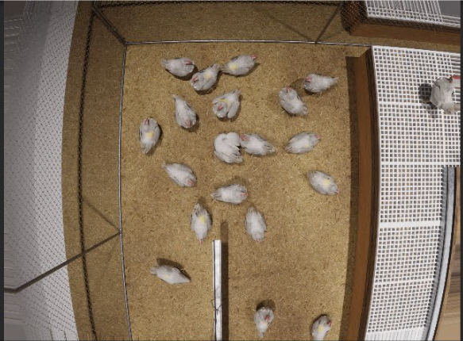

Computer Vision and Embedded Systems Intern, Summer 2025
Prophet AI
I joined Prophet AI as its first employee and helped turn a prototype into a practical system. I scaled the deployment from a small pilot to a much larger rollout, reduced compute cost, and improved accuracy. We monitored poultry health by installing cameras in barns and tracking each bird’s activity with a custom detector and a Kalman-filter-based tracker. A chicken’s health is closely tied to its activity level, so we could catch early illness signs at a scale farmers could not manually.
Shrinking compute with pixel differencing
Running inference on every single frame wastes compute because chickens are mainly static. I implemented a pixel-differencing pre-filter that isolates moving regions and only sends those crops to the detector. This reduced the number of frames requiring detection by about 75%, lowering CPU and bandwidth usage and making edge deployments practical.
From hardware to deployment
Instead of relying on expensive IP cameras, I prototyped a system using Raspberry Pi 4s with USB cameras and custom 3D-printed mounts. This reduced per-unit cost and made installations repeatable. We intentionally avoided features we didn't need to favor stable, consistent viewpoints across many fixtures.


Improving labels with dynamic masking
Partial objects at the frame edges caused inconsistent annotations. To reduce incorrect labels, I introduced a dynamic mask per camera which defines which area is owned by a camera and ignores ambiguous edge detections. Cleaner training data improved the F1 score from 0.94 to 0.98.


Synthetic data and simulation
To generate more training data and capture rare or difficult scenarios without more physical cameras, I wrote a pipeline to project 2D annotations into a 3D Unity scene and render synthetic frames. This let us recreate the real data in a Unity digital twin, generate new scenarios with different lighting, density, and occlusion, and improve the model’s robustness

